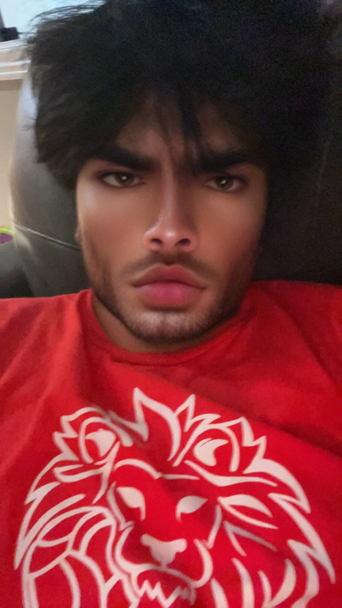

Hello! I am Nathan and I will let you know a little about me. I am a Vietnamese grade 11 student that attends Nora Frances Henderson Secondary School. I hope to attend University for my post secondary path, where? I have no clue, but I hope to go into engineering. I play club volleyball at Ancaster Lions Volleyball Club. I am a setter and I really enjoy playing. I have 1 younger brother, he is 4. My favourite colour is purple and I love bun bo hue, it is a vietnamese dish.
